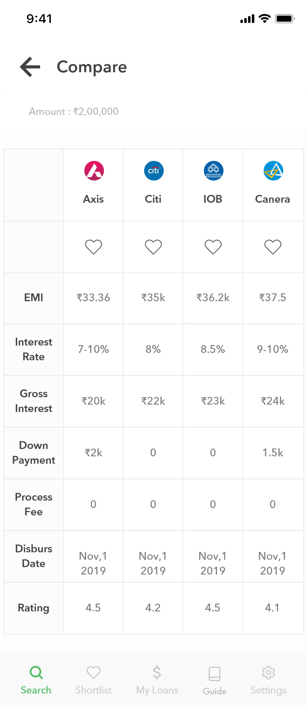
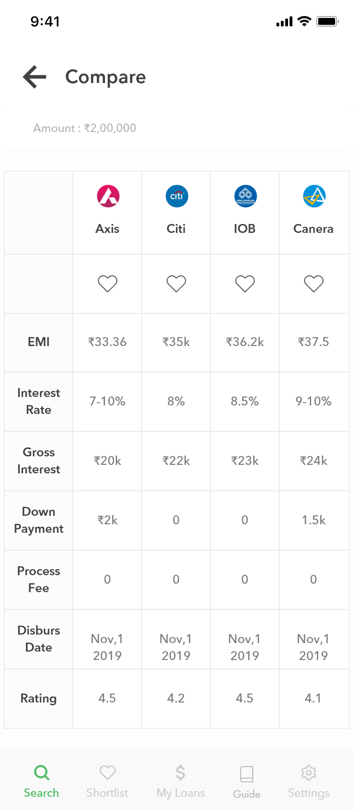

1. Add Personal Details
2. Compute Eligibility based on Age, Credit Score, Salary, History etc
3. Find Suitable Deal
4. Verify Required documents
5. Get Offer Approved by the bank
6. Loan Amount is transferred to the account (Disbursement)
7. Loan is paid back in monthly installments.
Most of the apps (Cashbean, Cashmama) I researched had a lengthy onboarding procedure with an eligibility and document wall before their offers which made the process so much harder. BankBazaar kind of got around that problem by asking for documents only after the offer was selected.
There are many components in a home loan : Installment Number, Due Date, Opening Principle, Installment Amount,Principle Component of Installment, Interest Component of Installment,Closing Principle, Interest Rate Per Annum.
The components that gave the most important information about the loan were : The interest rate, the emi(monthly payment), and the one time fees (Down payment, Processing fee)
Another thing to note was the existance of fixed and floating interests. Floating interests will have varying monthly payments as opposed to fixed interests. So, there was a need to make the user aware of the exact monthly payment for floating interests.
Survey Source
The younger borrowers taking out a loan for the first time are turning to the branch over digital channels because they have questions about the product that they feel they need to ask of a ‘real person’.
Overall, the primary barrier to applying for a personal loan online is preferring to speak to someone during the application process in case any questions arise. Younger borrowers are also more likely to indicate that they were worried they would make a mistake if they applied online and that an online application would be too complicated.
An important aspect to this is providing borrowers with the ability to start stop and save their application at any time. RFi Group research has consistently found that this is one of most common features that would encourage online applications across different products. Allowing borrowers to stop and save their application and come back to it later would give borrowers confidence that if they have a problem with the application or have a question they need to ask of their lender they could come back to the application without having to start again.
For younger borrowers, the provision of a dedicated telephone application support hotline is also considered appealing and is more likely than average to
encourage younger borrowers to apply online.
Lenders could also look at providing would-be customers with information about the loan they are applying for and the loan application process in simple language via their website or in the branch. For those that are new to digital or to the loan application process, education is key.

 
